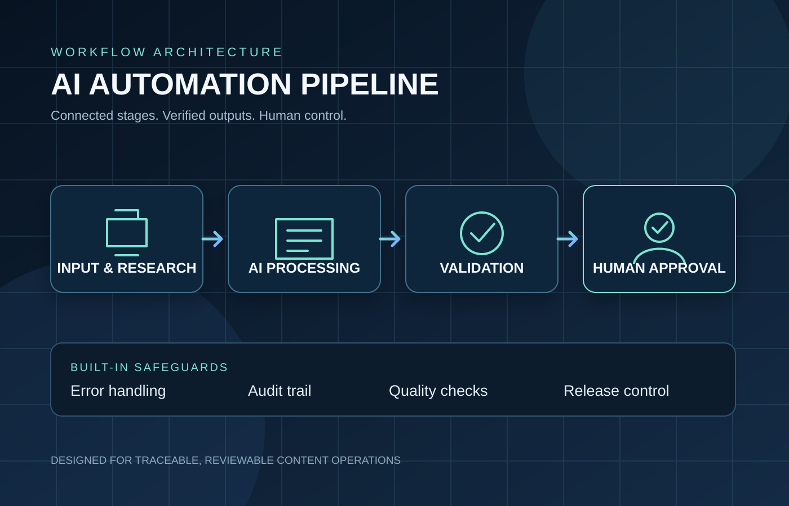

CASE STUDY / AI AUTOMATION / CONTENT OPERATIONS
AI Automation Pipeline
A professional workflow architecture for AI-assisted content operations, connecting research, production, quality assurance and release decisions. The design combines clear stage ownership, validation gates, recovery paths, audit records and human approval to support reliable, reviewable execution.

Real-world visual context
Visual references for the people, planning and technical work that support a reliable AI-assisted content pipeline.


1. Workflow at a glance
Each stage has a defined purpose, expected inputs, outputs and status. A failed blocking check routes the job to revision instead of allowing it to advance.
2. Architecture
Orchestration layer
Coordinates tools, stage transitions, job state and retry decisions. It should not silently skip a failed stage.
Data and asset layer
Stores the brief, research references, script versions, prompt versions, media references, outputs and current status under a unique job ID.
Validation layer
Checks required fields, source traceability, asset availability, continuity, rights checks, metadata and delivery requirements before handoff.
Governance and audit layer
Records stage changes, timestamps, versions, errors, retry attempts, QA results, approval identity and the final release decision.
Human control layer
Blocks public release until an authorised person reviews the complete output and explicitly approves it.
Feedback layer
Collects performance data after publication when available. Changes to the next production cycle should be tied to observed evidence, not guessed results.
3. State machine
IDEA → RESEARCHED → BRIEFED → SCRIPTED → ASSETS_READY → VOICE_READY → EDITED → QA_PENDING → HUMAN_APPROVAL → APPROVED → PUBLISHED → ANALYZING → OPTIMIZATION
When a blocking check fails, the job moves to REVISION. The system should retain the failed check, reason, owner, relevant version and next action.
4. Validation and quality gates
- Required job fields and source references exist.
- Claims are traceable to sources, and uncertainty is labelled where needed.
- Script, visual plan, audio and rendered media agree on the intended story.
- Character or scene continuity, asset rights, safety and originality receive review.
- Files, captions, metadata and delivery format meet the brief.
- The complete output is reviewed before approval, not only isolated clips.
Blocking defects return the job for revision. Passing a checklist is evidence of that check only, not proof of audience success.
5. Error handling and recovery
Retryable failures
Transient tool errors or temporary file failures should record the error, retry within a defined limit and preserve the job ID.
Non-retryable failures
Missing evidence, rights concerns, failed factual checks or unclear approvals should stop progression and request human review.
Partial failures
Completed outputs should remain linked to their versions. Recovery should resume from the failed stage where safe, rather than silently duplicating or losing work.
Safe fallback
If validation, logging or approval status cannot be confirmed, do not publish. Mark the job blocked and record the reason.
6. Audit trail
For each job, the intended record includes a unique ID, creation time, stage history, inputs and output references, version identifiers, validation results, error and retry history, reviewer decisions, approver identity and publication reference when applicable.
This makes it possible to answer: what changed, who approved it, which checks passed, what failed and which asset was released.
7. Human approval and release control
- Automated checks produce a QA result and list any blockers.
- A reviewer inspects the full content, factual claims, rights, sound, continuity and metadata.
- The authorised owner explicitly approves or returns it for revision.
- Only an approved job is eligible for public publishing.
- The approval and publication outcome are written to the audit record.
8. Test plan
- Happy path: all required inputs and checks pass, then approval is requested.
- Missing field or source: validation blocks progression.
- Transient tool error: retry is logged and bounded.
- Repeated failure: job moves to a blocked or revision state with a readable reason.
- QA failure: publishing remains unavailable.
- No approval: publishing remains unavailable.
- Approval recorded: only the approved version is eligible for release.
- Audit review: an operator can reconstruct the job history from its record.
9. Operational value and evaluation
The pipeline brings structure to content operations through defined inputs and outputs, validation before handoffs, recorded exceptions and explicit approval before release.
- Consistency: standard stages and acceptance checks help reduce avoidable omissions.
- Recoverability: bounded retries and revision states provide a controlled response to failures.
- Accountability: version history, stage records and approval decisions support traceability.
- Release governance: public publishing remains gated by a recorded human decision.
- Evaluation: workflow tests should cover normal completion, missing data, tool failures, QA rejection, absent approval and audit reconstruction.
The evaluation framework focuses on workflow reliability, recoverability, traceability and release governance. It defines the execution evidence and measurements used to assess the workflow in an implementation environment.
Let’s Connect
Questions, project enquiries, or interview opportunities? For more information about my work, please contact me on WhatsApp.